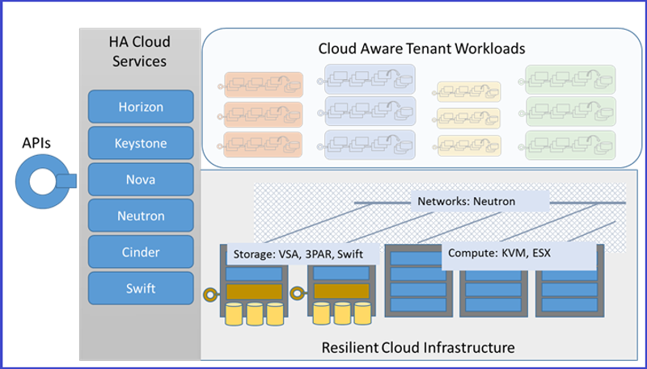
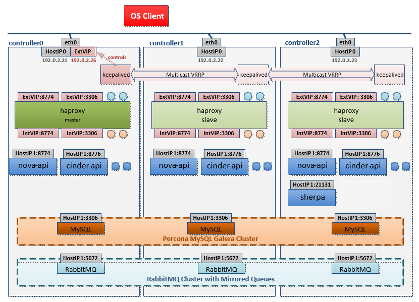
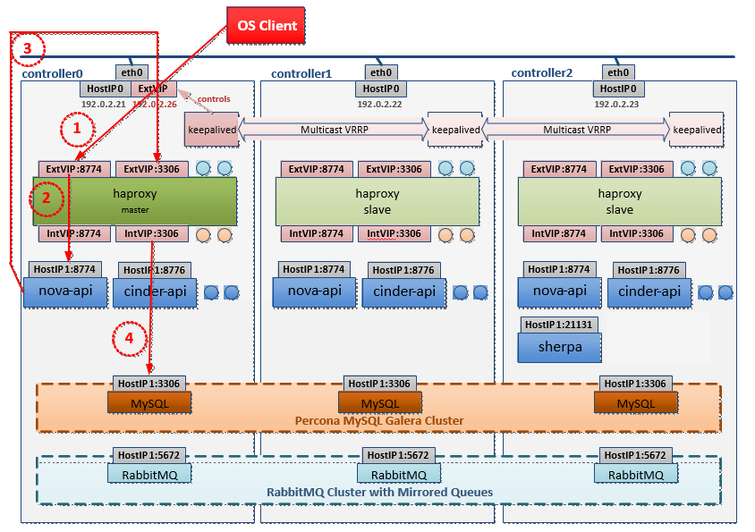
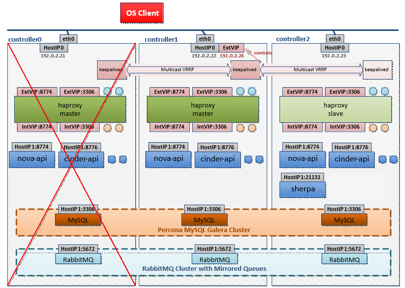
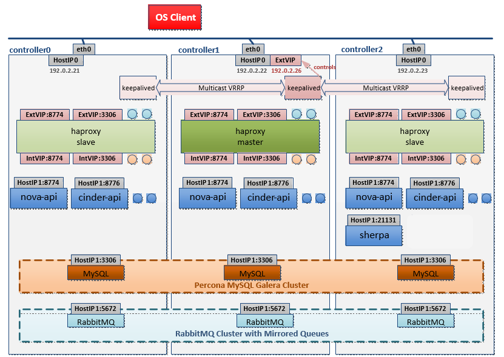
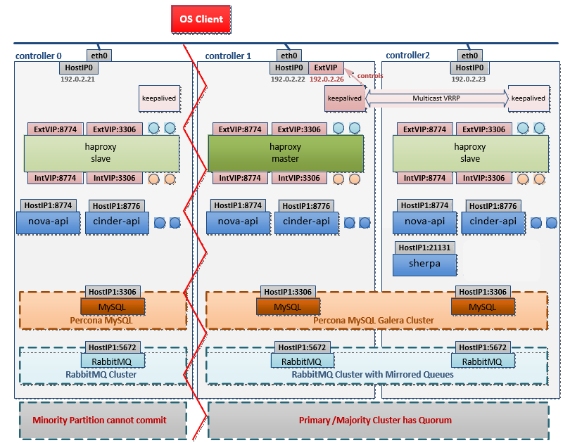
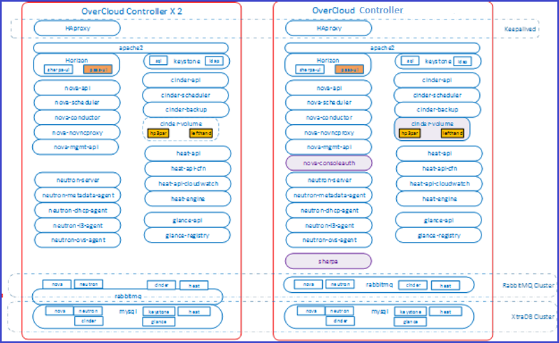
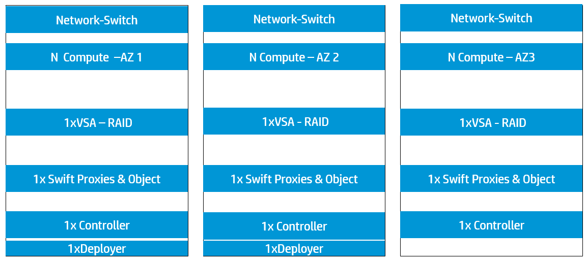
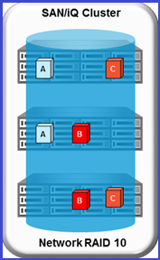

This page covers the following topics:
Highly Available Cloud ensures that at least a minimum of cloud resources are always available on request, which results in uninterrupted operations for users.
In order to achieve this high availability of infrastructure and workloads, we define the scope of HA to be limited to protecting these only against single points of failure (SPOF). Single points of failure include:
By design, HPE Helion OpenStack strives to create a system architecture resilient to SPOFs, and does not attempt to automatically protect the system against multiple cascading levels of failures; such cascading failures will result in an unpredictable state. Hence, the cloud operator is encouraged to recover and restore any failed component, as soon as the first level of failure occurs.
Highly Available Cloud Infrastructure
Cloud users are able to provision and manage the compute, storage, and network infrastructure resources at any given point in time and the Horizon Dashboard and the OpenStack APIs must be reachable and be able to fulfill user requests.

Once the Compute, Storage, and Network resources are deployed, users expect these resources to be reliable in the following ways:
The infrastructure that provides these features is called a Highly Available Cloud Infrastructure.
Highly Available Cloud-Aware Tenant Workloads
HPE Helion OpenStack Compute hypervisors do not support transparent high availability for user applications; as such, the project application provider is responsible for deploying their applications in a redundant and highly available manner, using multiple VMs spread appropriately across availability zones, routed through the load balancers and made highly available through clustering.
These are known as Highly Available Cloud-Aware Tenant Workloads.
The highly available cloud infrastructure consists of the following:
The HPE Helion OpenStack installer deploys highly available configurations of OpenStack cloud services, resilient against single points of failure.
The high availability of the controller components comes in two main forms.

The above diagram illustrates the HA architecture with the focus on VIP management and load balancing. It only shows a subset of active-active API instances and does not show examples of other services such as nova-scheduler, cinder-scheduler, etc.
In the above diagram, requests from an OpenStack client to the API services are sent to VIP and port combination; for example, 192.0.2.26:8774 for a Nova request. The load balancer listens for requests on that VIP and port. When it receives a request, it selects one of the controller nodes configured for handling Nova requests, in this particular case, and then forwards the request to the IP of the selected controller node on the same port.
The nova-api service list, which is listening for requests on the IP of its host machine, then receives the request and deals with it accordingly. The database service is also accessed through the load balancer . RabbitMQ, on the other hand, is not currently accessed through VIP/HA proxy as the clients are configured with the set of nodes in the RabbitMQ cluster and failover between cluster nodes is automatically handled by the clients.
The sections below cover the following topics in detail:
API Request Message Flow
The diagram below shows the flow for an API request in an HA deployment. All API requests (internal and external) are sent through the VIP.

The flow of a sample API request is explained below:
Handling Node Failure
With the above HA set up, loss of a controller node is handled as follows:
Assume that the Controller0, which is currently in control of the VIP, is lost, as shown in the diagram below:

When this occurs, keepalived immediately moves the VIP on to the Controller1 and can now receive API requests, which is load-balanced by HA proxy, as stated earlier.

Finally, when Controller0 comes back online, keepalived and HA proxy will resume in standby/slave mode and be ready to take over, should there be a failure of Controller1. The Controller0 rejoins the MySQL and RabbitMQ clusters.
Handling Network Partitions
It is important for the HA setup to tolerate network failures, specifically those that result in a partition of the cluster, whereby one of the three nodes in the control plane cannot communicate with the remaining two nodes of the cluster. The description of network partition handling is separated into the main HA components of the controller.
MySQL Galera Cluster
The handling of network partitions is illustrated in the diagram below. Galera has a quorum mechanism so when there is a partition in the cluster, the primary or quorate partition can continue to operate as normal, whereas the non-primary/minority partition cannot commit any requests. In the example below, Controller0 is partitioned from the rest of the control plane. As a result, requests can only be satisfied on Controller1 or Controller2. Controller0 will continue to attempt to rejoin the cluster:

When HA proxy detects the errors against the mysql instance on Controller0, it removes that node from its pool for future database requests.
Singletone Services
Cinder-Volume
Due to the single threading required in both cinder-volume and the drivers, the Cinder volume service is run as a singleton in the control plane. 
Cinder-volume is deployed on all three controller nodes, but kept active on only one node at a time. By default, cinder-volume is kept active on the controller. If the controller fails, you must enable and start the cinder-volume service on one of the other controller nodes, until it is restored. Once the controller is restored, you must shut down the Cinder volume service from all other nodes and start it on the controller to ensure it runs as a singleton.
Since cinder.conf is kept synchronized across all the 3 nodes, Cinder volume can be run on any of the nodes at any given time. Ensure that it is run on only one node at a time.
Details of how to activate Cinder Volume after controller failure is documented in Managing Cinder Volume and Backup Services.
Sherpa
In Helion OpenStack 2.0, Sherpa is used by the Helion Development Platform and is not used for Helion OpenStack Upgrade.
You must take periodic backups of the Sherpa service since it does maintain some state information on local disk storage on the controller. If the controller fails, Sherpa becomes unavailable until you rebuild or restore the controller. After restoring the controller, you should restore the Sherpa state from its latest backup.
Nova consoleauth
If the controller fails, the Nova consoleauth service will become unavailable and users will not be able to connect to their VM consoles via VNC. The service will be restored once you restore the controller.
Rebuilding or Replacing failed Controller Nodes
As described above, the three node controller cluster provides a robust, highly available control plane of OpenStack services. Either Controller1 or Controller2 servers can be shut down for a short duration for maintenance activities without impacting cloud service availability. (Controller0 cannot be shut down without affecting cloud service availability.)
In the unlikely event that one of the controller servers suffers an irreparable hardware failure, you can decommission and delete it from the cluster. You can then deploy the failed controller on a new server and connect it back into the original three node controller cluster. Learn more about Replacing/Rebuilding Controller Nodes.

While planning your OpenStack deployment, you should decide on how to zone various types of nodes - such as compute, block storage, and object storage. For example, you may decide to place all servers in the same rack in the same zone. For larger deployments, you may plan more elaborate redundancy schemes for redundant power, network ISP connection, and even physical firewalling between zones (this aspect is outside the scope of this document).
HPE Helion OpenStack offers APIs, CLIs and Horizon UIs for the administrator to define and user to consume, availability zones for Nova, Cinder and Swift services. This section outlines the process to deploy specific types of nodes to specific physical servers, and makes a statement of available support for these types of availability zones in the current release.
You can deploy your KVM Nova-Compute nodes either during initial installation, or by adding compute nodes post initial installation.
While adding compute nodes post initial installation, you can specify the target physical servers for deploying the compute nodes.
Learn more about Adding Compute Nodes after Initial Installation.
Nova host aggregates and Nova availability zones can be used to segregate Nova compute nodes across different failure zones.
Compute nodes deployed on ESX Hypervisor can be made highly available using the HA feature of VMware ESX Clusters. For more information on VMware HA, please refer to your VMware ESX documentation.
Highly available Cinder block storage volumes are provided by the network RAID 10 implementation in the HPE StoreVirtual VSA software. You can deploy the VSA nodes in three node cluster and specify Network RAID 10 protection for Cinder volumes.
The underlying SAN/iQ operating system of the StoreVirtual VSA ensures that the two-way replication maintains two mirrored copies of data for each volume.
This Network RAID 10 capability ensures that failure of any single server does not cause data loss, and maintains data access to the clients.
Furthermore, each of the VSA nodes of the cluster can be strategically deployed in different zones of your data center for maximum redundancy and resiliency. For more information on how to deploy VSA nodes on desired target servers, refer to the Configuring for VSA Block Storage Backend document.

Cinder availability zones are not supported for general consumption in the current release.
High availability in Swift is achieved at two levels.
Control Plane
The Swift API is served by multiple Swift proxy nodes. Client requests are directed to all Swift proxy nodes by the HA Proxy load balancer in round-robin fashion. The HA Proxy load balancer regularly checks the node is responding, so that if it fails, traffic is directed to the remaining nodes. The Swift service will continue to operate and respond to client requests as long as at least one Swift proxy server is running.
If a Swift proxy node fails in the middle of a transaction, the transaction fails. However it is standard practice for Swift clients to retry operations. This is transparent to applications that use the python-swiftclient library.
The entry-scale example cloud models contain three Swift proxy nodes. However, it is possible to add additional clusters with additional Swift proxy nodes to handle a larger workload or to provide additional resiliency.
Data
Multiple replicas of all data is stored. This happens for account, container and object data. The example cloud models recommend a replica count of three. However, you may change this to a higher value if needed.
When Swift stores different replicas of the same item on disk, it ensures that as far as possible, each replica is stored in a different zone, server or drive. This means that if a single server of disk drives fails, there should be two copies of the item on other servers or disk drives.
In this release, only a single zone is supported.
If a disk drive is failed, Swift will continue to store three replicas. The replicas that would normally be stored on the failed drive are “handed off” to another drive on the system. When the failed drive is replaced, the data on that drive is reconstructed by the replication process. The replication process re-creates the “missing” replicas by copying them to the drive using one of the other remaining replicas. While this is happening, Swift can continue to store and retrieve data.
Projects writing applications to be deployed in the cloud must be aware of the cloud architecture and potential points of failure and architect their applications accordingly for high availability.
Some guidelines for consideration:
Deployer
The deployer in Helion Openstack is not highly-available. The deployer state/data are all maintained in filesystem and are backed up by the Freezer backup. In case a deployer/lifecycle-manager node failure, the deployer state/data can be recovered from the backup.
Control Plane
High availability is not supported for Stateful L3 Services (Source-NAT), and Network Services (LBaaS, VPNaaS, FWaaS)